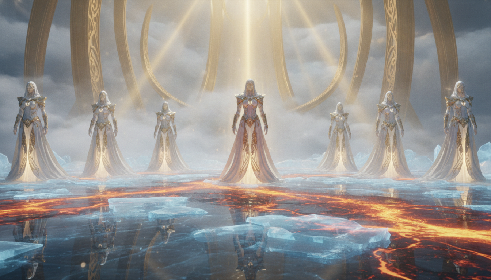

玻璃海上的凱歌：當神公義的審判臨到
弟兄姊妹們，當我們環顧當今的世界，常常會感到無力。真正的得勝，不是在地上苟且偷生，而是面對火的試煉，依然至死忠心。
重點：眼前的挫敗不是結局，持守真理站在玻璃海上，才是神眼中真正的得勝者！
我們敬拜神的公義，正如摩西與羔羊的歌。一位不會對罪惡發怒的神，就不是一位良善的神。當恩典之門關閉，審判終必臨到，這是我們傳福音的急迫性。

當神公義的審判臨到
全能的主神，萬世的君王，我們俯伏敬拜祢。當這世界的喧囂與罪惡似乎佔據上風時，求祢開我們的屬靈眼睛，看見那火中攙著玻璃的海，看見祢永遠掌權的寶座。主啊，祢的道途義哉！誠哉！求祢賜我們堅忍的信心，在這彎曲悖謬的世代中不與世界妥協，勝過一切獸的印記與誘惑。當祢公義的審判即將臨到全地，求祢將對祢的敬畏放在我們心中，使我們今日就唱出羔羊的凱歌，一生為主而活。奉主耶穌基督得勝的名求，阿們。
第一世紀末，羅馬皇帝多米田要求臣民稱他為「主和神」。拒絕參與帝王崇拜的基督徒面臨經濟封鎖與生命危險。啟示錄的書寫，正是為了鼓勵當時在苦難中的信徒拒絕妥協，宣告天上的凱歌高於地上的暴政。
本段落作為七號與七碗之間的過場，標誌著救贖歷史進入「恩典結束，公義審判」的階段。使用希伯來詩歌形式（摩西之歌）呼應羔羊之歌，將舊約救贖與新約終極救恩並列。
關鍵詞：Nikaō (勝了)。勝利不代表免於苦難，而是至死忠心。玻璃海中「有火攙雜」，預示審判的烈火即將臨到。
摩西與羔羊的雙重凱歌，將歷史的救贖整合。強調神公義的作為（Dikaiōma）經得起宇宙檢驗。
聖殿充滿煙，無人能進，象徵恩典之門關閉，審判執行完畢，代求不再生效。
弟兄姊妹們，當我們環顧當今的世界，常常會感到無力。真正的得勝，不是在地上苟且偷生，而是面對火的試煉，依然至死忠心。
重點：眼前的挫敗不是結局，持守真理站在玻璃海上，才是神眼中真正的得勝者！
我們敬拜神的公義，正如摩西與羔羊的歌。一位不會對罪惡發怒的神，就不是一位良善的神。當恩典之門關閉，審判終必臨到，這是我們傳福音的急迫性。
「當基督呼召一個人的時候，祂是叫他來死。」 —— 潘霍華
「不認識神公義的人，永遠無法真正明白祂的愛。」 —— 提摩太·凱勒
網路資料可能出錯，請小心查證、謹慎使用。